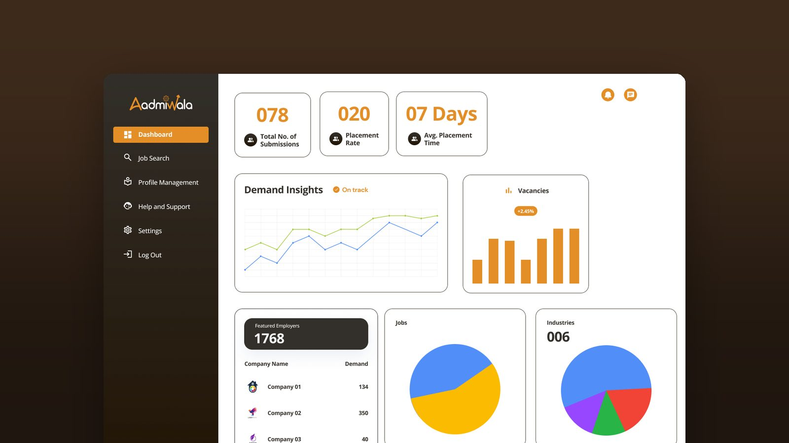
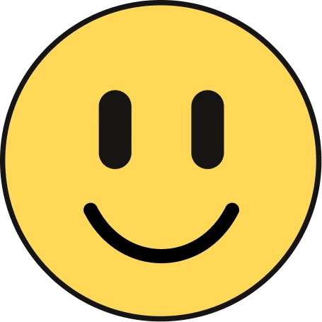
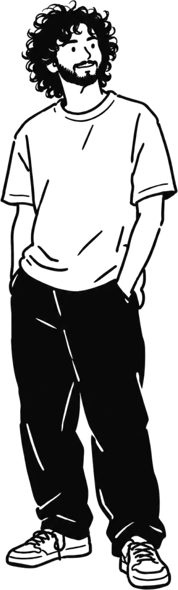
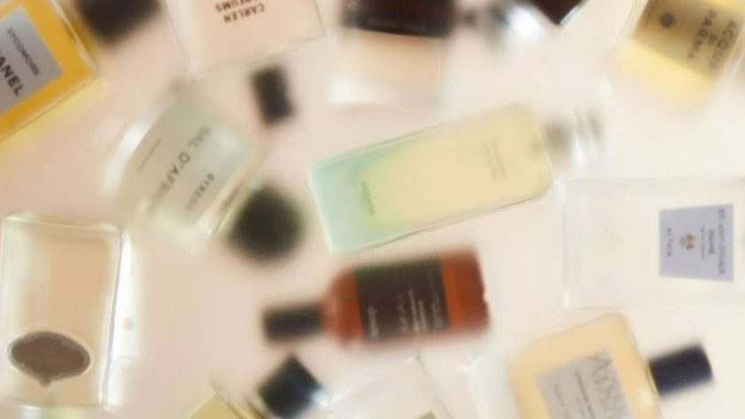

Why is hiring through recruiting firms so hard to track?
01 / Aadmiwala · Client work · Real Glide


I notice weird things. Then I try to figure out why they happen. Sometimes that becomes a brand. Sometimes an interface. Sometimes a photograph.

Why is hiring through recruiting firms so hard to track?
01 / Aadmiwala · Client work · Real Glide
Why don’t men ask for help, even when they need it?
02 / Sukoon · Self-initiated research
Why do people walk past a craft this old?
03 / KASHIKRITI · Branding & packagingI’m Utsav. I trained as an image-maker in Banaras, studying Applied Arts at BHU. Now, at NID Bengaluru, I’m learning to design for people: going from making things look good to making things make sense.


How do you find a scent you can’t put into words?
04 / Syntra · Retail tech · Group project